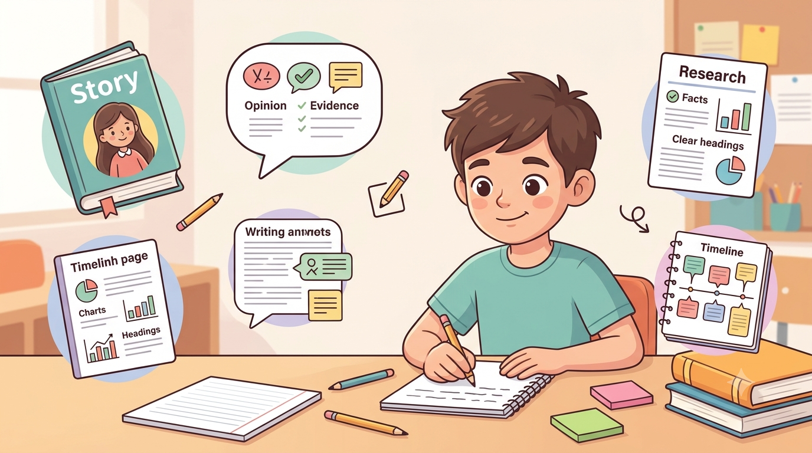

Year 6 Writing: Four Types of Writing Every Student Should Practise
I was looking through the Year 6 section of the Aussie Primary Academy worksheet library recently and noticed something I probably should have caught earlier.
There were grammar worksheets.
Vocabulary.
Reading comprehension.
But somehow… no narrative writing.
No persuasive writing.
No informative report writing.
And no recount writing.
Which is a little embarrassing when you are literally building a primary school resource library. 😂
The funny thing is that these gaps are easy to miss.
You can spend weeks creating resources term by term, subject by subject, and topic by topic. Everything looks fine when you look at it individually.
But then you step back and realise:
“Oh. We completely forgot one of the main types of writing students are expected to practise.”
So I went back and fixed it.
Four essential Year 6 writing genres
The Year 6 writing collection now includes four different writing genres.
1. Narrative writing
Narrative writing gives students the opportunity to create characters, build tension and develop a story.
At this level, students can move beyond simply writing:
“He was scared.”
Instead, they can show emotion through actions, dialogue, thoughts and carefully chosen details.
2. Persuasive writing
Persuasive writing helps students develop a clear point of view and support it with reasons, evidence and strong language choices.
Students can also begin to consider opposing viewpoints and practise using rebuttals to make their arguments more convincing.
3. Informative report writing
Informative writing is about explaining a topic clearly and accurately.
Students practise organising information, selecting relevant facts and using an objective, factual tone.
4. Recount writing
Recount writing is more than simply listing everything that happened.
Students practise sequencing events clearly while adding relevant details and reflection to make their writing more meaningful.
Why students need to practise different types of writing
The goal isn't to give students four worksheets and say, “There you go, now you can write.” 😂
Writing is something that develops through practice.
Students need opportunities to write for different purposes, different audiences and different types of texts.
A student who is confident writing a story may still find persuasive writing difficult. Another student may be comfortable explaining facts but struggle to organise a recount.
That is why practising different writing genres matters.
The gaps in a resource library are easy to miss
Honestly, I think this is one of the easiest areas for a resource library to accidentally leave incomplete.
You might have plenty of grammar resources.
Plenty of reading comprehension.
Plenty of spelling and vocabulary.
But when a teacher searches for a Year 6 writing activity, they may need something very specific:
- A narrative writing prompt
- A persuasive writing activity
- An informative writing structure
- A recount writing worksheet
That is why I am trying to build the Aussie Primary Academy library with the bigger picture in mind — not just adding individual worksheets, but checking whether the collection actually covers the skills students need.
Because sometimes the biggest gaps are the ones you don't notice until you look at the whole library.
What type of writing do students find most difficult?
Narrative?
Persuasive?
Informative?
Or recount writing?
Different students often find different genres challenging, which is why regular practice across multiple writing styles can be so useful.
Common Year 6 Writing Misconceptions
A few habits worth catching early, across all four genres.
"Using 'I think' or 'in my opinion' makes persuasive writing more honest." It actually weakens the argument — persuasive writing is stronger when it states a clear position and backs it with facts, examples and reasoning, rather than hedging.
"A first draft should already be the final piece." Many Year 6 students expect good writing to come out right the first time. Modelling your own drafting and revising — even briefly — helps normalise the idea that editing is part of writing, not a sign something went wrong.
"Narrative writing doesn't need planning, since it's 'just a story'." Without a quick plan, narratives often lose structure halfway through. A short beginning-middle-end outline before writing usually produces a stronger, more complete story.
Parent & Teacher Tips
Practical ways to build these four genres into everyday practice.
Daily 10-minute free writing: let your child choose the topic — the goal is fluency and confidence, not a perfect piece every time.
Turn persuasive writing into a real debate: "Should we have more screen time?" works well as a genuine after-dinner discussion before it becomes a written piece.
Practise recount with real events: a five-sentence recount of a school excursion or the weekend is low-pressure and genuinely meaningful to write.
Self-editing over correcting: ask your child to find two mistakes themselves (capital letters, full stops) before you point anything out.
Give writing a real audience: a letter or email to a grandparent makes the purpose of writing clear in a way a worksheet alone can't.
Explore Year 6 English Worksheets
Looking for free printable Year 6 English resources? Explore Australian Curriculum-aligned worksheets for grammar, reading comprehension and writing practice.
Explore Year 6 WorksheetsFrequently Asked Questions
What types of writing should Year 6 students practise?
Year 6 students benefit from practising a range of writing genres, including narrative, persuasive, informative and recount writing. Each genre requires students to write for a different purpose and audience.
What is narrative writing for Year 6 students?
Narrative writing involves creating stories with characters, settings and events. Year 6 students can develop their writing by creating tension, using dialogue and showing character emotions through actions and details.
What is persuasive writing for Year 6?
Persuasive writing requires students to communicate a clear opinion and support it with reasons, evidence and persuasive language. Students can also practise responding to opposing viewpoints.
Why is it important to practise different writing genres?
Different writing genres help students develop different skills. Practising a range of writing types helps students adapt their writing to different purposes, audiences and situations.